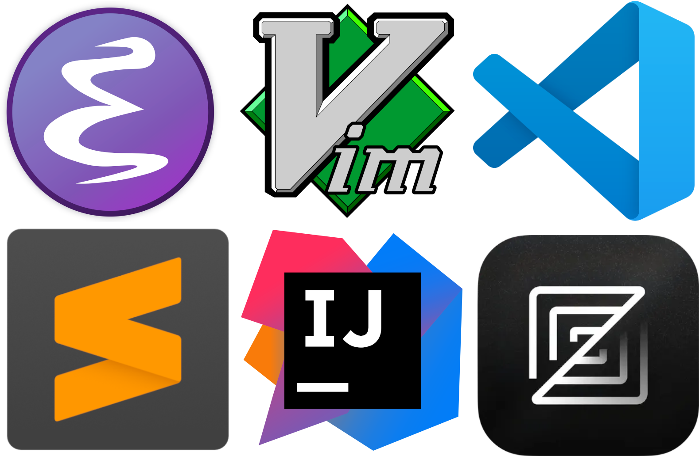
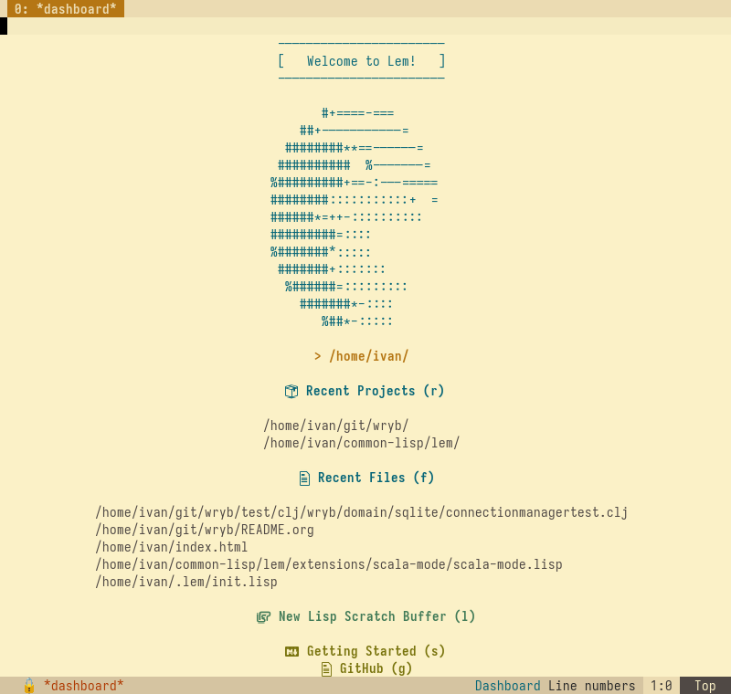
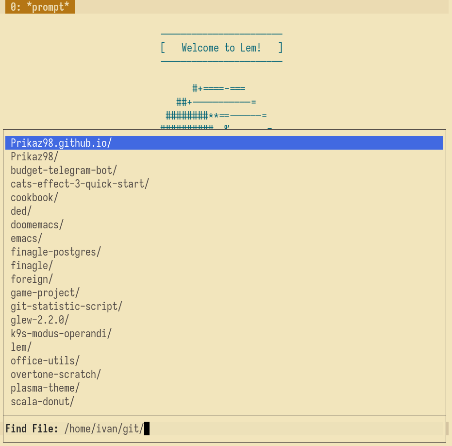
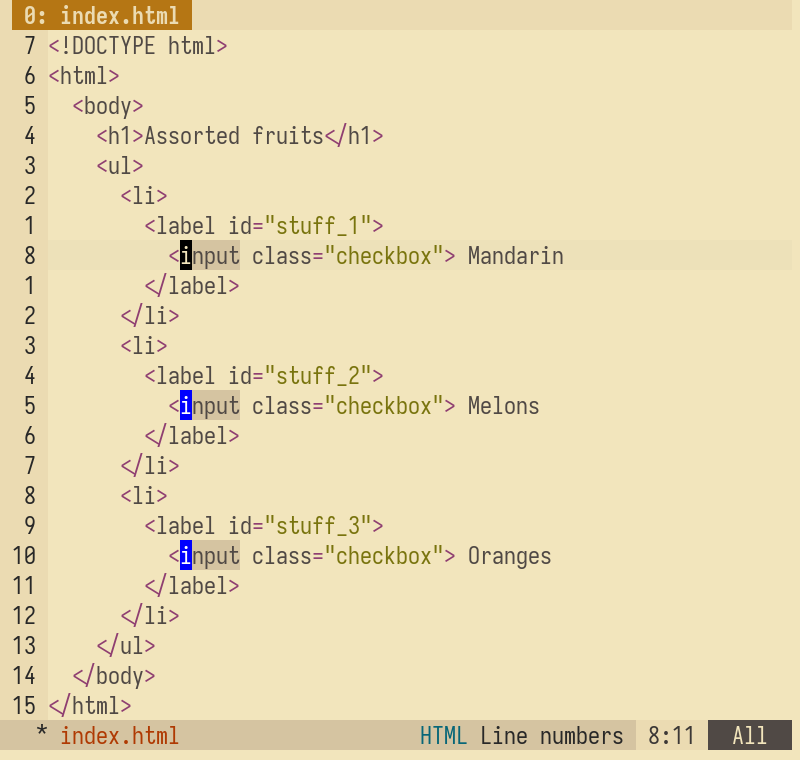
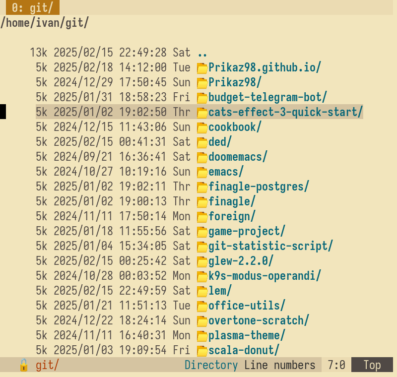
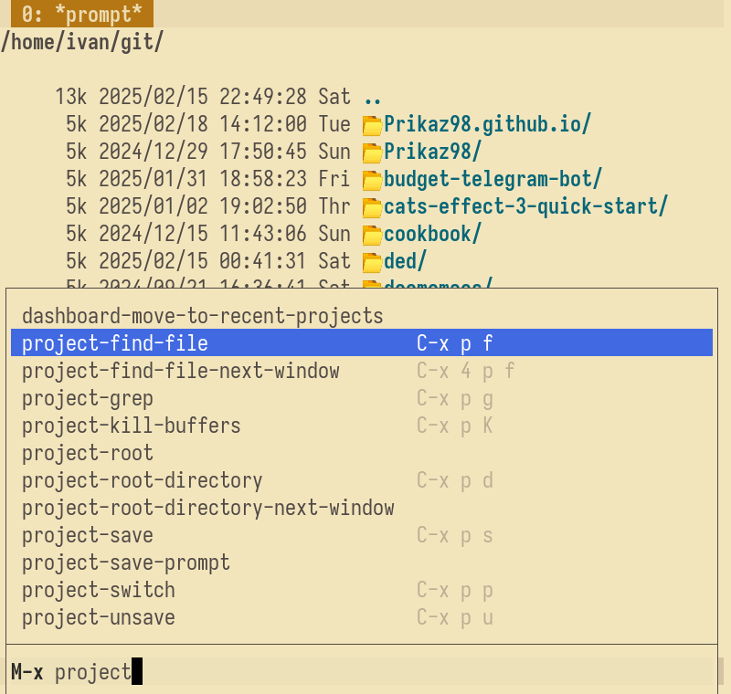
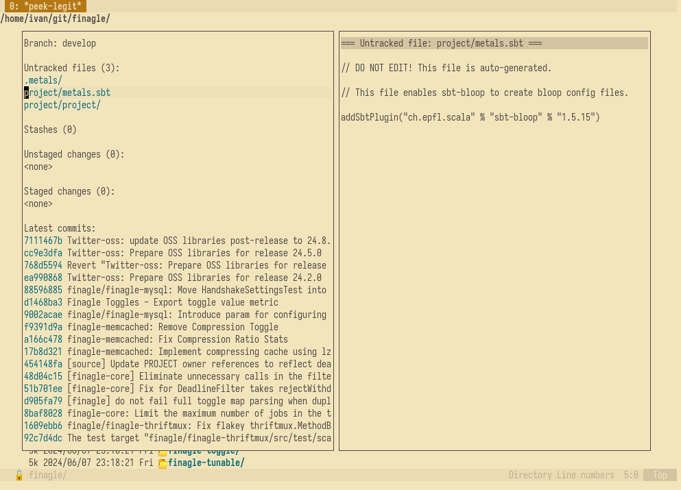
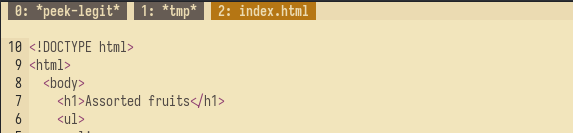
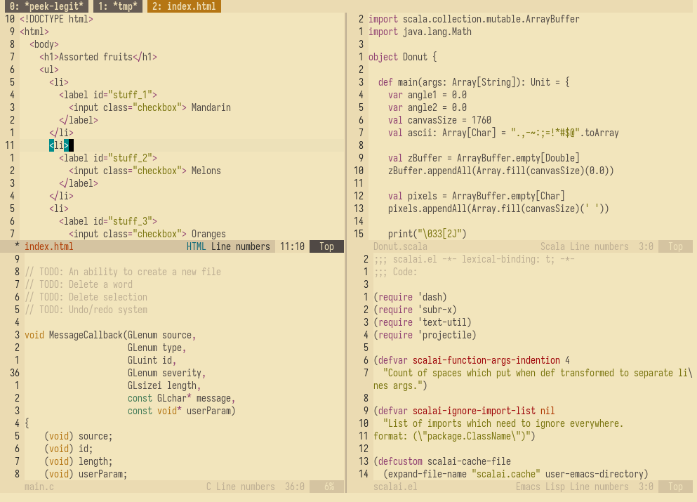

A Brief Article About the Lem Editor
Prelude
I like Emacs it's extensibility is amazing, but every I've noticed that to implement some new features that related with some of UI elements might be very difficult - becuase you need to support a few different way to show user data.
Like how it work in Projectile
( projectile-completion-system 'auto
:group 'projectile
:type '(radio
(const :tag auto)
(const :tag ido)
(const :tag helm)
(const :tag ivy)
(const :tag default)
(function :tag )))
And I didn't find any attempts to implement an editor with benefits of Emacs with good customization opporutnity and extensibility and modern editorls like VSCode with stable core set of build-in features and UI components.
Good Customization Opporutnities
There are many editors that allow you to write extensions, but their design doesn't make it as simple as it is in Programmable Editor like Emacs or Lem (write a function → feed it to the editor → run). This is especially true when you need to perform tasks that require hard-coded logic.
For example, I sometimes prepare Jira task in Emacs because it's more comfortable than using Jira's web form. When I need to create a task, I just call a function
( jira-create-new-task (title)
( )
...)
by jira.el.
Which I developed myself. Emacs then prompts me to write a title, saves the file in a special directory and with special name, and after editing, I convert the org-mode format to Jira format and copy it in the clipboard, automatically, in fly. There's no reason to solve this problem in modern editors like VS Code because it's highly specific personal workflow.
A Stable Set of Build-in Features
Emacs has been around for over 40 years, and during that time, certain features have become essential for almost everyone. If we look at MELPA's packages list and sort it by downloads, we can see that the most popular packages are:
- Magit - Git client for Emacs
- Helm - Fuzzy finding, file completions, and more
- Company-mode - Text completions
- Flycheck - Syntax checking
- Dired - File manager (a build-in package but extremely popular)
- Treemacs or Neotree - Project sidebar tree
- Evil - Vim keybindings for Emacs
- (lang)-mode - Basic programing language support (indentation, syntax highlighting)
- Lsp - Integration with Language Server Protocol
- Projectile - Project management and navigation
I believe these features like are widely used because they significantly increase productivity. So why not combine them into an editor by default and allows community to build their own features on top of a solid core API? (fortunately it happened in Lem)
Why Lem is awesome!
Lem is an editor designed to address these needs.

When I first launched it, I immediately felt at home. Everything works naturally for Emacs user - but better. The defaults, like find-file, execute-command, dashboard (instead of splash screen that most people disable anyway :D) all felt intuitive. I've already contributed a few things in Lem project, and I love how easy it is. Common Lisp is a fantastic language for an extensible editor.
One of my favorite features is that Lem can run like a regular GUI App - just like I prefer in Emacs.
Out-of-the-box features in Lem:
- Dashboard 
- Auto-complition 
- Multiple-cursors 
- Directory mode 
- Project commands 
- Legit 
- Workspackes (frame-multiplexer) 
- Polyglot editor (Lem support a huge number of programming languages) 
also Tabs, Copilot, LSP and all of this is available out of the box.
I see Lem as an evolution of Emacs/Vim editor and I hope the project continues to grow and improve.
Thank you for reading, and happy hacking!
Date: Tue Feb 18 03:51:49 PM CET 2025